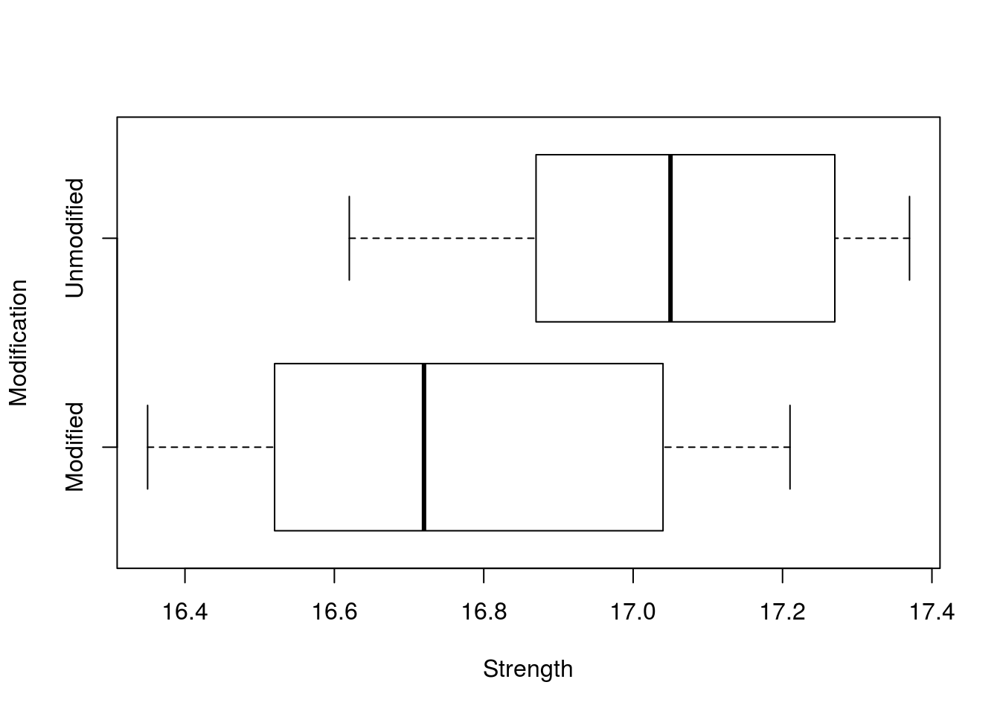
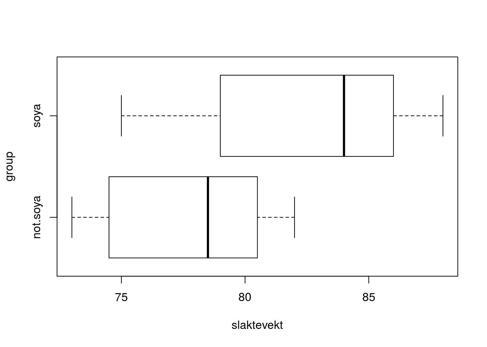
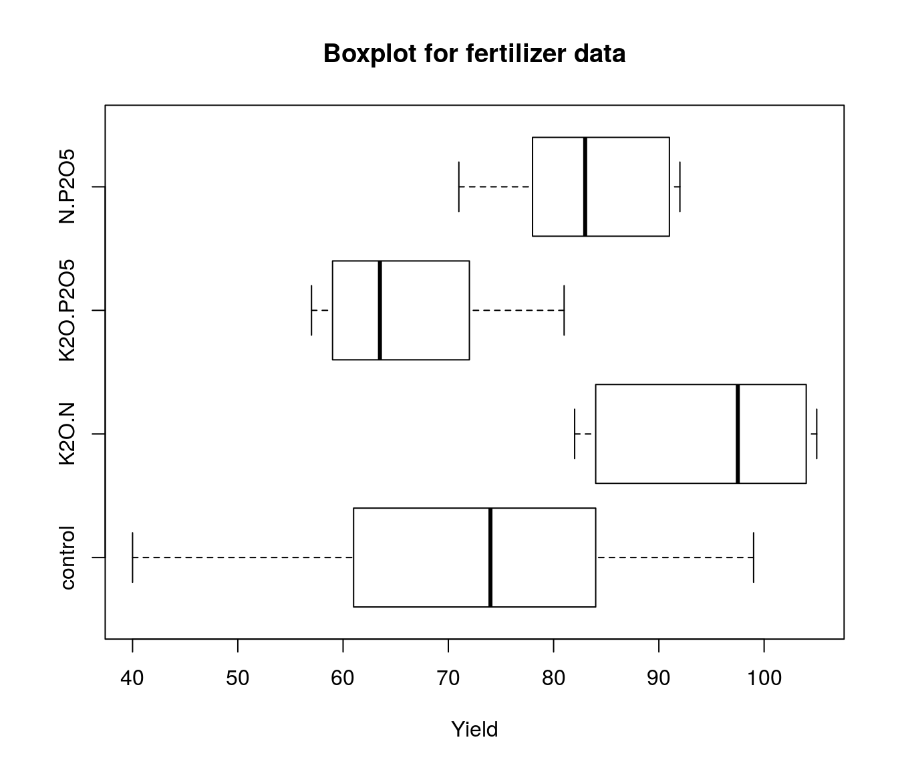
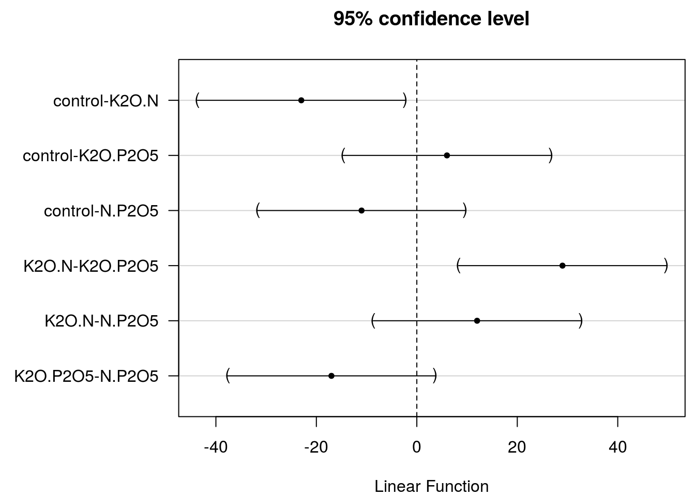
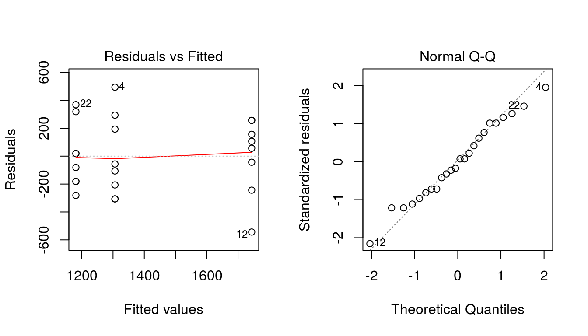

Week One
Exercise 1
- Input the ‘Portland cement’ data (reproduced from Montgomery Table 2.1 in week1, slide 13) into R. Excel file called Tabl2
This can be done in several ways. One possibility is to enter data in excel and copy and then go R Commander: Data > Import data > From text … - Tick: Clipboard, Comma (If you use comma as Decimal point in excel) - Check that data looks right by ticking: View data set
You can also load it using load function if your dataset is in .Rdata format. In this case, if your dataset Tabl21.Rdata is in download folder under your home folder,
load("~/Downloads/Tabl21.Rdata")From R-commander: Data > Load data > …
- Stack the columns (Data > Active dataset> …)
PortlandStack <- stack(Portlandcement)
names(PortlandStack) <- c('Strength', 'Modification')- Use R to produce summary statistics (as produced by the summary command in R) for each of the groups.
Modified Unmodified
Min. :16.35 Min. :16.62
1st Qu.:16.54 1st Qu.:16.90
Median :16.72 Median :17.05
Mean :16.77 Mean :17.04
3rd Qu.:17.02 3rd Qu.:17.23
Max. :17.21 Max. :17.37 - Make boxplot for each of the groups.

- We would like to test if the two cement types are equal. Formulate the hypotheses formally and use R to perform the test. Formulate a conclusion.
Let \(Y_{ij}\) is strength in cement type \(i\), sample \(j\). We assume \(Y_{ij} \sim N(\mu_i, \sigma^2)\), where all observations are independent. This is equal to assume this model: \[Y_{ij} = \mu_i + \epsilon_{ij}, \text{ where } \epsilon_{ij} \sim N(0, \sigma^2), i = 1, 2 \text{ and } j = 1, 2, \ldots 9\]
Note that we assumed equal variances for both types. The hypothesis for testing if the two mortar formulations are equal is,
\[ \begin{aligned} H_0 &: \mu_\text{modified} - \mu_\text{unmodified} = 0 \\ H_1 &: \mu_\text{modified} - \mu_\text{unmodified} \ne 0 \end{aligned} \]
Two Sample t-test
data: Modified and Unmodified
t = -2.1767, df = 18, p-value = 0.04306
alternative hypothesis: true difference in means is not equal to 0
95 percent confidence interval:
-0.542393085 -0.009606915
sample estimates:
mean of x mean of y pooled std.dev.
16.7660000 17.0420000 0.2835293 Since p-value is smaller than 0.05, we reject null hypothesis (\(H_0\)) and conclude that there is significant different between two mortar formulation at 5 percent level.
- Explain different ways of performing tests (hints: test statistic, p-values, and confidence intervals).
Although we have used p-value in previous question, we can use following ways to perform this test,
- Test Statistics: The test-statistic is compared with the critical value from t-table at 5% level of significance. We reject \(H_0\) if, \[t_\text{calculated} (\text{test-statistic}) > t_{\alpha/2, n_1 + n_2 - 2}\].
- Confidence Interval Method: If 95% confidence interval for the estimate does not include zero, then we reject the null hypothesis \(H_0\) at 5% level of significance. In our case, the 95% confidence interval (-0.5423931, -0.0096069) does not include zero so, we reject null hypothesis at 5% level of significance.
- p-value Approach: If p-value is less than 0.05 then we reject \(H_0\) at 5% level of significance.
- Repeat the calculations for e) above, but now using only a calculator, summary output from R and a table of the t distribution.
The null hypotheses expresses equality of expected values, i.e.,
\[H_0: \mu_1 = \mu_2\] The test statistic is,
\[t = \frac{\bar{x}_1 - \bar{x}_2}{\text{SEM}}\] where,
\[ \begin{aligned} \bar{x}_1 &= 16.766 && \bar{x}_2 = 17.042 \\ s_1^2 &= 0.0993156 && s_2^2 = 0.0614622 \\ s_p^2 &= \frac{(n_1-1)s_1^2 + (n_2-1)s_2^2}{n_1 + n_2 -2} = 0.2835293 \\ \text{SEM} &= s_p\sqrt{\frac{1}{n_1} + \frac{1}{n_2}} = 0.1267982\\ t &= -2.1766874 \end{aligned} \]
Here, We reject the null hypothesis since \[|t| = 2.1766874 > t_{0.025;18} = 2.100922\]
Exercise 2
Two sorts of wheat, Zebra and RB07, were grown in 8 randomly chosen fields per sort. The protein content was measured for each sort and the data are given below.
| Sort | Protein |
|---|---|
| Zebra | 12.1 |
| Zebra | 12.8 |
| Zebra | 10.4 |
| Zebra | 11.9 |
| Zebra | 11.8 |
| Zebra | 11.6 |
| Zebra | 13.4 |
| Zebra | 13.3 |
| RB07 | 18.3 |
| RB07 | 19.5 |
| RB07 | 12.7 |
| RB07 | 14.7 |
| RB07 | 15.3 |
| RB07 | 16.1 |
| RB07 | 15.4 |
| RB07 | 16.8 |
The data are stored in a file called Zebra (Excel). Import the data to R by Data > Import data from > from excel file
- Consider both wheat sorts. Formulate a model for the data analysis where you assume equal variances.
A model for the data: \[Y_{ij} = \mu_i + \epsilon_{ij}\] where, \(\epsilon_{ij} \sim N(0, \sigma^2)\) and the observations are indipendent for all Sorts \(i = 1, 2\) and Portein Sample \(j = 1, 2, \ldots, 8\)
- How would you estimate this variance?
We first estimate the variance in each group. Here are summary statistics from R:
mean sd var length
RB07 16.1000 2.1226668 4.5057143 8
Zebra 12.1625 0.9898593 0.9798214 8Combine the two estimates by the pooled variance estimate as,
\[ \begin{aligned} S_p^2 &= \frac{(n_1 -1)s_1^2 + (n_2 -1)s_2^2}{n_1 + n_2 - 2} \\ &= \frac{(8 - 1)4.51 + (8 - 1)0.98}{8 + 8 - 2} \\ &= 2.745 \end{aligned} \]
- How many parameters are included in the model? Give an interpretation of the parameters.
There are 3 parameters in this model:
- \(\mu_1\) is the expected protein level in Zebra wheat (in the whole population)
- \(\mu_2\) is the expected protein level in RB07 wheat (in the whole population)
- \(\sigma^2\) is the variance in protein level within a wheat sort. This is assumed to be the same in both Zebra and RB07.
- What is the estimated difference between the population means? What are the standard deviation and the standard error of this estimate?
mean sd var length
RB07 16.1000 2.1226668 4.5057143 8
Zebra 12.1625 0.9898593 0.9798214 8We estimate the expected difference \(\mu_1 − \mu_2\) by the difference in sample means which is \(16.1 – 12.1625 = 3.9375\). The standard deviation for this estimate is \[ \sigma\sqrt{\frac{1}{n_1} + \frac{1}{n_1}} = \frac{\sigma}{2} (\text{ since, } n_1 = n_2 = 8)\]
The standard error is the estimated standard deviation or \[ \hat{\sigma}\sqrt{\frac{1}{n_1} + \frac{1}{n_2}} = \frac{\hat{\sigma}}{2} = \frac{S_\text{pooled}}{2} = 0.8280652 \]
- Test whether the expected protein content in Zebra is different from RB07.
The two sample t-test result from R is,
Two Sample t-test
data: RB07 and Zebra
t = 4.7551, df = 14, p-value = 0.0003075
alternative hypothesis: true difference in means is not equal to 0
95 percent confidence interval:
2.161477 5.713523
sample estimates:
mean of x mean of y pooled std.dev.
16.10000 12.16250 1.65613 Since p-value = 0.00031 << 0.05, we reject \(H_0\) and claim that the there is significant different in the expected protein content in two types of wheat at 5% level of significance.
- Construct a 95 % CI for the true difference in protein between the two sorts. Is zero included in the interval? If not, what does this mean?
From the two-sample t-test output above, the 95% confidence interval is (2.1614768, 5.7135232). Here zero is not included in the interval, this also confirm our previous result that the expected protein content in Zebra and RB07 is significantly different.
NOTE:: The remaining questions are a bit harder, more theoretical …
- If you are told that \[ (n_1+n_2−2) \frac{S_\text{pooled}^2}{\sigma^2} \sim \chi^2_{n_1+n_2−2} \] show that \(s_\text{pooled}^2\) is an unbiased estimate of \(\sigma^2\).
From theory, we know, \[\frac{k \cdot S^2}{\sigma^2} \sim \chi^2_k\] where \(S^2\) is a variance estimate based on \(k\) independent terms (that is \(k\) is the degrees of freedom associated with \(S^2\)). Hence, we have, \[\frac{(n_1 + n_2 - 2)S_p^2}{\sigma^2}\sim \chi_{n_1+n_2-2}^2\]
For \(\chi^2\) distribution variables with \(k\) degrees of freedom we know that the expected value is \(k\) and the variance is \(2k\). Therefore we can deduce: \[ \begin{aligned} E\left[\frac{(n_1+n_2-2)S_p^2}{\sigma^2}\right] &= n_1 + n_2 - 2 \\ \left[\frac{(n_1+n_2-2)E\left(S_p^2\right)}{\sigma^2}\right] &= n_1 + n_2 - 2 \\ \text{Therefore, } E\left(S_p^2\right) &= \sigma^2 \end{aligned} \]
- Find the variance of \(S_\text{pooled}^2\). Construct a 95% CI for \(\sigma^2\). Explain the interval to a person without statistical knowledge.
Similarly using the fact that the variance of the \(\chi^2\) distributed variable with \(k\) degrees of freedom is \(2k\): \[ \begin{aligned} \text{var}\left[\frac{(n_1+n_2-2)S_p^2}{\sigma^2}\right] &= 2(n_1 + n_2 - 2) \\ \left[\frac{(n_1+n_2-2)}{\sigma^2}\right]^2 \text{var}\left(S_p^2\right) &= 2(n_1 + n_2 - 2) \\ \text{Therefore, } \text{var}\left(S_p^2\right) &= \frac{2\sigma^4}{n_1 + n_2 - 2} \end{aligned} \] Further, \[\text{sd}\left(S_p^2\right) = \sqrt{\frac{2\sigma^4}{n_1 + n_2 - 2}}\] and the standard error is the estimate of, \[\text{se}\left(S_p^2\right) = \sqrt{\frac{2S_p^4}{n_1 + n_2 - 2}}\] Which by inserting all the known values gives,
\[\text{se}\left(S_p^2\right) = \sqrt{\frac{2\times2.743^2}{8 + 8 - 2}} = 1.075\]
and the confidence interval is,
\[\left[\frac{(n_1 + n_2 - 2)S_p^2}{\chi^2_{0.025, n_1+n_2-2}}, \frac{(n_1 + n_2 - 2)S_p^2}{\chi^2_{0.975, n_1+n_2-2}}\right]\] for \(\alpha/2 = 0.025\), we find from the Table III in the Appendix over tail probabilities of the Chi-square distribution that \(\chi^2_{0.025, 14} = 26.119\) and \(\chi^2_{0.975, 14} = 5.629\). This gives the interval [1.47, 6.823]. This means that we are 95% certain that the true variance of protein yield in either Zebra or RB07 is expected to lie in this interval.
- Test if the (population) variance is greater than 5. State the null hypothesis, the alternative and the level of significance, draw the conclusions.
Hypothesis for the test is, \[H_0: \sigma^2 = 5 \text{ vs } H_1: \sigma^2 > 5\]
Under null hypothesis, \[\chi^2 = \frac{(n_1+n_2-2)S_p^2}{\sigma_0^2} = \frac{38.402}{5} = 7.686\] is distributed as \(\chi^2_{n_1+n_2-2}\). We reject the null hypothesis at 5% level if \(\chi^2 > \chi^2_{0.05, 14} = 23.685\), which it is not. Thus, we retain the null hypothesis and cannot claim that the population variance in protein yield is larger than 5.
Exercise 3 (Relatively Theoritical)
In a pond there are thousands of fish. Two students want to estimate the average weight of all fish in the pond. Student 1 catches one fish of 1 kg, while student 2 catches 2 fishes, one with weight 1 kg, another weighing 1.2 kg. The following estimators for the unknown expectation are suggested
\[ \begin{aligned} \hat{\mu}_1 &= \bar{Y}_1 = 1 \\ \hat{\mu}_2 &= \bar{Y}_2 = 1.1 \\ \hat{\mu}_3 &= \frac{\bar{Y}_1 + \bar{Y}_2}{2} = 1.05 \\ \hat{\mu}_4 &= \frac{\bar{Y}_1 + 2\bar{Y}_2}{3} = 1.07 \end{aligned} \]
Show that all estimators are unbiased, calculate their variance, and give your vote to the one with smallest variance.
Remember that \(E(\bar{Y}) = \mu\), thus the first two estimators are unbiased as they are the average value of each students fish weight. Further,
\[ \begin{aligned} E(\hat{\mu}_3) &= \frac{E(\bar{Y}_1) + E(\bar{Y}_2)}{2} = \frac{\mu + \mu}{2} = \mu \\ \text{and, } E(\hat{\mu}_4) &= \frac{E(\bar{Y}_1) + E(2\bar{Y}_2)}{3} = \frac{\mu + 2\mu}{3} = \mu \\ \end{aligned} \]
Also, the variance for each of them are,
\[ \newcommand{\var}{\text{var}} \begin{aligned} \var(\hat{\mu}_1) &= \sigma^2 \\ \var(\hat{\mu}_2) &= \sigma^2/2 \\ \var(\hat{\mu}_3) &= \frac{1}{4}\left(\sigma^2 + \frac{\sigma^2}{2}\right) = \frac{3}{8}{\sigma^2} \\ \var(\hat{\mu}_4) &= \frac{1}{9}\left(\sigma^2 + \frac{4\sigma^2}{2}\right) = \frac{3}{9}{\sigma^2} \end{aligned} \]
In general: If student 1 has caught \(n_1\) fishes and student 2 has caught \(n_2\) fishes, the best estimator is \[\hat{\mu} = \frac{n_1\bar{Y}_1 + n_2\bar{Y}_2}{n_1 + n_2}\] Show that this is unbiased and find the variance.
Here,
\[ \begin{aligned} E(\hat{\mu}) & = E\left(\frac{n_1\bar{Y}_1 + n_2\bar{Y}_2}{n_1 + n_2}\right) \\ & = \frac{n_1 E(\bar{Y}_1) + n_2 E(\bar{Y}_2)}{n_1 + n_2} \\ & = \frac{n_1 \mu + n_2 \mu}{n_1 + n_2} = \mu \end{aligned} \]
Thus, \(\hat{\mu}\) is an unbiased estimator of \(\mu\). Further, the variance is,
\[ \begin{aligned} \text{var} \left(\hat{\mu}\right) & = \frac{1}{(n_1 + n_2)^2}\left[ n_1^2 \text{var}{\left(\bar{Y}_1\right)} + n_2^2 \text{var}{\left(\bar{Y}_2\right)} \right] \end{aligned} \]
Exercise 4
Assume the following result (on scale 0-100) based on 8 randomly selected students from an exam in a basic course in statistics.
| S1 | S2 | S3 | S4 | |
|---|---|---|---|---|
| Females | 80 | 85 | 73 | 69 |
| Males | 90 | 60 | 76 | 67 |
- Execute a test (choose the level of significance yourself) to investigate if there is larger variation in statistical ability among males compared to females.
| N | Mean | Variance | |
|---|---|---|---|
| Females | 4 | 76.75 | 50.91667 |
| Males | 4 | 73.25 | 167.58333 |
\(Y_{ij}\) is result for person \(j\) belonging to group \(i\).
The Model is: \[Y_{ij}=\mu_i + \epsilon_{ij}\], where \(\epsilon_{ij} \sim N(0, \sigma_i^2)\), \(i = 1, 2\) and \(j = 1, 2, 3, 4\) and the observations are independent
\(i = 1\) is females, otherwise males
\[ \begin{aligned} H_0: & \sigma_1^2 = \sigma_2^2\\ H_1: & \sigma_1^2 < \sigma_2^2 \end{aligned} \]
The test statistics is, \[F = \frac{S_\text{males}^2}{S_\text{females}^2} = 3.29\]
If we apply 5% level of significance, then we reject \(H_0\) if \(F > 9.28\).
Conclusion: We cannot reject.
- Based on the result of the test in a) state a model and test if there is difference in statistical knowledge between males/females. The test gave a 0.65 as P-value. Explain in detail what this means.
Wa assume equal variances for males and females end state the following model:
\[ Y_{ij} = \mu_i + \epsilon_{ij}\] where, \(\epsilon_{ij} \sim N(0, \sigma^2)\)
The hypothesis is,
\[ \begin{aligned} H_0: & \mu_1 = \mu_2 \\ H_1: & \mu_1 \ne \mu_2 \end{aligned} \]
Assume \(H_0\), and \(T_\text{calculated} = 0.474\).
Very small \(T\), it is impossible to reject \(H_0\) also p-value = 0.653.
If males and felmale in average (population) obtain the same result, the probability of observing a difference (absolute value) between the sample means equal or greater than 0.474 is 0.653.
Exercise 5
Consider the data of Exercise 1 again (available as Table21Stacked.RData in fronter; you can go Data > Load … to load the data). If necessary stack the data.
- Are the variances of the two groups different? Formulate a hypothesis test and perform the test using R (Statistics > Variances)
The hypothesis to test if the variance of the two groups different is,
\[ \begin{aligned} H_0 &: \sigma_\text{modified}^2 = \sigma_\text{unmodified}^2 \\ H_1 &: \sigma_\text{modified}^2 \ne \sigma_\text{modified}^2 \end{aligned} \]
The test result from R is,
F test to compare two variances
data: variable by factor
F = 1.6293, num df = 9, denom df = 9, p-value = 0.4785
alternative hypothesis: true ratio of variances is not equal to 1
95 percent confidence interval:
0.4046845 6.5593806
sample estimates:
ratio of variances
1.629257 Here, p-value = \(0.478 > 0.05\), we cannot reject \(H_0\) and could not claim that the variance between two groups are different.
- Do the test by as explained in Week1, slide 39 using only the fact below
| var | n | |
|---|---|---|
| Modified | 0.1001378 | 10 |
| Unmodified | 0.0614622 | 10 |
The observed test statistic is,
\[F = \frac{0.1001}{0.0614} = 1.63\]
Under the null hypothesis, \(F \sim \text{Fisher}(9,9)\) From table (or in R: Distributions > Continuous distributions > F distribution > F quantiles),
\[F_{0.025, 9, 9} = 4.026\]
This value is not exceeded (draw a figure) and therefore we cannot claim that variances differ.
Comment: Observe that we only know that the p-value \(>0.05\) as opposed to the exact p-value found in a) above. In this case we don’t need the lower critical value as \(F>1\). However, this can be found as,
\[F_{0.975, 9, 9} = \frac{1}{F_{0.025, 9, 9}} = \frac{1}{4.03} = 0.25\]
- Assume now the variances of the two groups to be equal and calculate a 95% confidence interval for the common standard deviation using the output in b) above.
Here, we have,
\[n = n_1 + n_2 = 20, \text{df} = 20 - 2 = 18\]
Under the assumption of equal variance of the two groups, the pooled variance is calculated as,
\[ \begin{aligned} S_p^2 & = \frac{(n_1 - 1)s_1^2 + (n_2 - 1)s_2^2}{n_1 + n_2 - 2} \\ & = \frac{s_1^2 + s_2^2}{2} = 0.0808 \end{aligned} \]
Also, \[\chi_{0.975}^2 = 8.231 \text{ and } \chi_{0.025}^2 = 8.231\]
\[ \begin{aligned} \left[ \frac{\text{df} \times S_p^2}{\chi_{0.025}^2}, \frac{\text{df} \times S_p^2}{\chi_{0.975}^2} \right] &= \left[ \frac{18 \times 0.0808}{31.53}, \frac{18 \times 0.0808}{8.23} \right] \\ &= [0.046, 0.0177] \end{aligned} \]
Exercise 6: Two sample t-test or One way ANOVA in R
Load the data svin.RData. The data are as described in Week1 slide 17. Final weights have been collected for 9 pigs in the soya group and 8 pigs in the non-soya group. The question addressed is: Do the different feeding strategies give different carcass weight (Norwegian: Slaktevekt)?
- Produce relevant summary statistics and plots. There are several ways to summarise, e.g., here’s default for R: Data > Numerical summaries split on groups
| mean | sd | var | n | |
|---|---|---|---|---|
| not.soya | 77.75 | 3.370036 | 11.35714 | 8 |
| soya | 82.88889 | 4.675587 | 21.86111 | 9 |
Boxplot:

- Formulate the model (include assumptions, also equal variances in both groups) and hypotheses.
See Week 1, Exercise - 4 Answer
- Perform the test and comment
-
As a two-sample test (R: Statistics > Means …)
Two Sample t-test data: slaktevekt by group t = -2.5681, df = 15, p-value = 0.02142 alternative hypothesis: true difference in means is not equal to 0 95 percent confidence interval: -9.4040625 -0.8737153 sample estimates: mean of x mean of y pooled std.dev. 77.750000 82.888889 4.118162 -
As an ANOVA
Analysis of Variance Table Df Sum Sq Mean Sq F value Pr(>F) group 1 111.85 111.846 6.595 0.02142 * Residuals 15 254.39 16.959 --- Signif. codes: 0 '***' 0.001 '**' 0.01 '*' 0.05 '.' 0.1 ' ' 1Comment: Same p-value. ANOVA only gives two sided test.
- Calculate a 95% confidence interval for the difference in weights in the two groups.
- Repeat c) and d) above but now use a significance level of 0.01 and calculate 99% confidence intervals.
- Explain the difference between one-sided and two-sided hypotheses.
Exercise 7: One way ANOVA
Three diets for pigs were investigated, two of the diets had different soya proteins (S1 and S2) one diet had no soya included (NONS). The following weights were recorded.
| NONS | S1 | S2 |
|---|---|---|
| 80 | 82 | 82 |
| 84 | 84 | 86 |
NOTE::Do the following without any software or pocket calculator:
-
State the model that you would apply to this experiment.
The model is:
\[Y_{ij} = \mu + \tau_i + \epsilon_{ij},\text{ where }\epsilon_{ij} \sim N(0,\sigma^2),\; i = 1, 2, 3; \;\; j = 1, 2\]
and where the observations are independent
-
How many parameters are included in the model?
With the assumption of \(\tau_i's\) sum to zero, i.e. \(\sum_{i = 1}^3{\tau_i} = 0\), there are 4 unknown paramters, \(\mu, \tau_1, \tau_2\) and \(\sigma^2\).
-
State the null hypothesis and the alternative to test if there is any effect of diet.
The null and alternative hypothese for testing if there is any effect of diet is, \[ \begin{aligned} H_0 &: \tau_1 = \tau_2 = \tau_3 \\ H_1 &: \tau_i \ne 0 \text{ for at least one }i \end{aligned} \] -
Find the rejection area if you test on level 0.05 or on level 0.1
- at 5% level of significance, we reject \(H_0\), if \(F\)-statistic is larger than \(F_{0.05, (2, 3)}\), i.e. 9.552
- at 1% level of significance, we reject \(H_0\), if \(F\)-statistic is larger than \(F_{0.01, (2, 3)}\), i.e. 30.817
-
Find \(SS_T\), \(SS_\text{Treatments}\), \(SS_E\), and their degrees of freedom.
Let \(y_{ij}\) denotes the measurement for \(i^\text{th}\) treatment and \(j^\text{th}\) observation. So, \(i = 1, 2, 3\) and \(j = 1, 2\;(n)\)
\[ \begin{aligned} \text{SS}_\text{total} & = \sum_{i = 1}^3\sum_{j = 1}^2{\left(y_{ij} - \mu\right)^2} = 22\\ \text{SS}_\text{residual} & = \sum_{i = 1}^3\sum_{j = 1}^2{\left(y_{ij} - \bar{y}_i\right)^2} = 18 \\ \text{and, } \text{SS}_\text{treatment} & = n \sum_{i = 1}^3{\left(\bar{y}_i - \mu\right)^2} \\ & = \text{SS}_\text{total} - \text{SS}_\text{residual} = 4 \end{aligned} \]
Also, the degree of freedom for treatment is \(3 - 1 = 2\), for residual is is \(6 - 3 = 3\) and for total is \(6 - 1 = 5\)
-
Find \(MS_\text{Treatments}\) and \(MS_E\) and \(F_0\). Write up the ANOVA table. Use R to get the pvalue. HINT: Distribution > Continuous > F …)
\[ \begin{aligned} \text{MS}_\text{Treatment} = \frac{\text{SS}_\text{Treatment}}{\mathcal{df}_\text{treatment}} = 2 \\ \text{MSE} = \text{MS}_\text{residual} = \frac{\text{SS}_\text{residual}}{\mathcal{df}_\text{residual}} = 6 \end{aligned} \]
Further, \[F_0 = \frac{\text{MS}_\text{Treatment}}{\text{MSE}} = 0.333\]
Using R, the pvalue corresponding to \(F_0\) is 0.7401
Using all these values, we can construct ANOVA table as,
Df Sum Sq Mean Sq F value Pr(>F) treatment 2 4 2 0.3333 0.7401 Residuals 3 18 6 -
What is your conclusion on the test?
Calculated \(F_0\) is too small; for this test only large values can lead to rejection and the critical value is \(F_{0.05, 2, 3} = 9.55\). Therefore, We can not reject \(H_0\).
-
Estimate all the parameters in the model.
The estimated parameters in the model are,
\[ \begin{aligned} \hat{\sigma}^2 & = \text{MSE} = 6 \\ \hat{\mu} & = \bar{Y}_{\cdot\cdot} = 83 \\ \hat{\tau}_1 & = \hat{\mu}_1 - \hat{\mu} = -1 \\ \hat{\tau}_2 & = \hat{\mu}_2 - \hat{\mu} = 0 \\ \hat{\tau}_3 & = \hat{\mu}_3 - \hat{\mu} = 1 \end{aligned} \]
-
Find a 95% CI for \(\sigma^2\)
Use Chi-square table with 3 degrees of freedom to get,
\[ \begin{aligned} \chi^2_{0.025, 3} & = 9.348 \\ \chi^2_{0.975, 3} & = 0.216 \end{aligned} \]
The 95% CI for \(\sigma^2\) is,
\[ \left[ \frac{\text{SSE}}{\chi^2_{0.025, 3}}, \frac{\text{SSE}}{\chi^2_{0.975, 3}} \right] = \left[ 1.925, 83.412 \right] \]
-
Find a 99% CI for the difference between the two soya diets.
The CI for \(\mu_i - \mu_j\) is same as CI for \(\tau_i - \tau_j\), so, the CI for soya diets (\(\tau_2\) and \(\tau_3\)) is,
\[ \begin{aligned} \bar{y}_{3\cdot} - \bar{y}_{2\cdot} - t_{\alpha/2, N - a}\sqrt{\frac{2\text{MSE}}{n}} & \le \mu_3 - \mu_2 \\ & \le \bar{y}_{3\cdot} - \bar{y}_{2\cdot} + t_{\alpha/2, N - a}\sqrt{\frac{2\text{MSE}}{n}} \\ \hat{\tau}_{3\cdot} - \hat{\tau}_{2\cdot} - (5.841) \times \sqrt{\frac{2\times 6}{2}} & \le \mu_3 - \mu_2 \\ &\le \hat{\tau}_{3\cdot} - \hat{\tau}_{2\cdot} + (5.841) \times \sqrt{\frac{2\times 6}{2}} \\ 1 - (14.307) \le & \mu_3 - \mu_2 \le 1 + (14.307) \\ -13.307 \le & \mu_3 - \mu_2 \le 15.307 \end{aligned} \]
In otherwords, the 95% confidence limit for true difference between \(\mu_3\) and \(\mu_2\) lie in the interval \(\left[-9.26, 7.26\right]\)
Control as many answers as possible by using R
NOTE:: Without any software or pocket calculator:
Add 6 kg to all the weights in the soya group.
-
What influence will this have on the sum of squares?
If we add 6 to the soya groups then the difference between the group averages will be larger, but noting happens to variation inside the group. \(\text{SS}_\text{treatments}\) will increase, but the noise (SSE) will be unaffected. Sum of squares for Treatment, Residual and Toatal before and after adding 6 to soya group is,
before after treatment 4 76 residual 18 18 total 22 94 -
What is \(F_0\). now? Comment!
Since F value is a ratio betwen MS for treatment and residuals, \(F_0\) (F value) will be larger. This increases the chance of rejecting null hypothesis (no difference between groups).
-
Perform the test in this situation.
The ANOVA table in this situation is,
Here, the p-value is much smaller than in the previous case, and even is significant at 10%. This shows that the difference between treatments (NONS, S1 and S2) has increased in this situation.Df Sum Sq Mean Sq F value Pr(>F) treatment 2 76 38 6.3333 0.0838 Residuals 3 18 6
Go back to the original data, but add 6 kg to the heaviest pig in each group.
-
What influence will this have on the Sum of squares?
The differences between the means will be unaffected, but the variance inside the groups will be larger. Hence \(\text{SS}_\text{treatments}\) will be unaffected, but the noise and SSE will increase. The ANOVA in this situation is,
Df Sum Sq Mean Sq F value Pr(>F) treatment 2 4 2 0.0455 0.9562 Residuals 3 132 44 -
What is \(F_0\) now? Comment!
Here, \(F_0\) is even smaller since noise (variation within groups) has increases.
-
Perform the test in this situation.
Small \(F_0\) leads to low probability of rejecting null hypothesis. From ANOVA table, high p-value shows that we can not reject null hypothesis and conclude that there is not significant difference between the effects of diet on pigs.
Exercise 8
Load the data fertilizer.RData. The data have been discussed in class, different slides:
- Produce relevant summary statistics and plots.
A summary statistics for the fertilizer data is,
| mean | sd | n | 0% | 25% | 50% | 75% | 100% | |
|---|---|---|---|---|---|---|---|---|
| control | 72 | 20.169 | 6 | 40 | 63.75 | 74.0 | 82.00 | 99 |
| K2O.N | 95 | 9.879 | 6 | 82 | 87.00 | 97.5 | 102.75 | 105 |
| K2O.P2O5 | 66 | 8.989 | 6 | 57 | 60.00 | 63.5 | 70.00 | 81 |
| N.P2O5 | 83 | 8.319 | 6 | 71 | 78.25 | 83.0 | 90.00 | 92 |
Further, a boxplot can be a relevant plot to compare the effect of fertilizer,

- Do the fertilizers give different yields? Formulate the hypotheses and do the ANOVA in R.
Let \(y_{ij}\) be the yield from \(i^\text{th}\) fertilizer and \(j^{th}\) replication.
The model: \[ y_{ij} = \mu + \tau_i + \epsilon_{ij}, \epsilon_{ij} \sim NID(0, \sigma^2)\] Here, \(i = 1, 2, 3, 4\) and \(j = 1, 2, \ldots 6\)
The hypothesis for testing if the fertiliizers give different yields is,
\[ \begin{aligned} H_0 &: \tau_i = 0 \text{ for all } i = 1, 2, 3, 4 \\ H_1 &: \tau_i \ne 0 \text{ for at least one } i \end{aligned} \]
The ANOVA table we obtain is,
| Df | Sum Sq | Mean Sq | F value | Pr(>F) | |
|---|---|---|---|---|---|
| fertilizer | 3 | 2940 | 980.0 | 5.99 | 0.004 |
| Residuals | 20 | 3272 | 163.6 |
Here, p-value is smaller than 0.05 or even 0.01. So we reject null hypothesis \(H_0\) at 5% and also at 1% level of significance.
- Formulate a conclusion.
Since the null hypothesis is rejected, we conclude that fertilizers result significantly different yield.
- There are four different fertilizers. How many pairwise comparisons can be made?
From four differnt fertilizer, we can make \(^4C_2 = 6\) comparisons. The comparisons can be between:
| control | control | control | K2O.N | K2O.N | K2O.P2O5 |
| K2O.N | K2O.P2O5 | N.P2O5 | K2O.P2O5 | N.P2O5 | N.P2O5 |
- Use Tukey’s method to compute confidence intervals for the differences in means. Calculate p-values based on Tukey’s method.
The result from Tukey’s method is,
Simultaneous Confidence Intervals and Tests for General Linear Hypotheses
Multiple Comparisons of Means: Tukey Contrasts
Fit: lm(formula = y ~ fertilizer, data = fertilizer)
Quantile = 2.7989
Minimum significant difference = 20.6692
95% confidence level
Linear Hypotheses:
Lower Center Upper Std.Err t value P(>t)
control-K2O.N -43.669 -23.000 -2.331 7.385 -3.115 0.02582 *
control-K2O.P2O5 -14.669 6.000 26.669 7.385 0.812 0.84784
control-N.P2O5 -31.669 -11.000 9.669 7.385 -1.490 0.46190
K2O.N-K2O.P2O5 8.331 29.000 49.669 7.385 3.927 0.00427 **
K2O.N-N.P2O5 -8.669 12.000 32.669 7.385 1.625 0.38785
K2O.P2O5-N.P2O5 -37.669 -17.000 3.669 7.385 -2.302 0.13109
---
Signif. codes: 0 '***' 0.001 '**' 0.01 '*' 0.05 '.' 0.1 ' ' 1
(Adjusted p values reported -- single-step method)The formula for finding Tukey’s confidence interval for same sample size for all groups:
\[ \left[\bar{y}_{i\cdot} - \bar{y}_{j\cdot} \pm q_{\alpha(a, f)}\sqrt{\frac{\text{MSE}}{n}}\right] \] Here, \(a =\) Total number of groups, \(f =\) degree of freedom associated with \(\text{MSE}\) and \(\alpha =\) level of significance. The value of \(q_{\alpha(a, f)}\) is on Studentized Range Statistic Table
- Formulate a conclusion.
Tukey’s output in previous answer shows that yield from fertilizer K20.N differs significantly from control (p-value: 0.02562) and K20.P205 (p-value: 0.00439).
We can also use plot for Tukey test for some visualization,

- Test if the 3 new fertilizers are better than the control by using a suitable contrast.
For testing the average effect of 3 new fertilizer with control, a contrast can be constructed with coefficients c(-1, 1/3, 1/3, 1/3). So, the hypothesis in this situation will be,
\[ \begin{aligned} H_0 &: \frac{1}{3}\left(\mu_2 + \mu_3 + \mu_4\right) - \mu_1 = 0 \\ H_1 &: \frac{1}{3}\left(\mu_2 + \mu_3 + \mu_4\right) - \mu_1 \ne 0 \end{aligned} \]
In general form, the hypothesis can be written as,
\[ \begin{aligned} H_0 &: \sum_{i = 1}^a {c_i\bar{y}_{i\cdot}} = 0 \\ H_1 &: \sum_{i = 1}^a {c_i\bar{y}_{i\cdot}} \ne 0 \end{aligned} \]
In this case, \(c_i = -1, 1/3, 1/3, 1/3\) for \(i = 1, 2, 3, 4\) respectively
We can write contrast as,
\[C = \sum_{i = 1}^a {c_i\bar{y}_{i\cdot}}\]
The Standard Error for \(C\) is,
\[\text{SE}(C) = \sqrt{\frac{\text{MSE}}{n} \sum_{i = 1}^a {c_i^2}}\]
Thus, the test statistics for testing the hypothesis is,
\[t_0 = \frac{\sum_{i = 1}^a{c_i\bar{y}_{i\cdot}}}{\sqrt{\frac{\text{MSE}}{n} \sum_{i = 1}^a {c_i^2}}} \sim t_{\alpha/2, N-a}\]
Further, the Confidence Interval is given as,
\[ \left[\sum_{i = 1}^a{c_i\bar{y}_{i\cdot}} \pm t_{\alpha/2, N-a} \sqrt{\frac{\text{MSE}}{n} \sum_{i = 1}^a {c_i^2}} \right] \]
The result from R-commander contrast test is,
Estimate Std. Error t value
fertilizer c=( 1 -0.33 -0.33 -0.33 ) -9.310175 6.014596 -1.54793
Pr(>|t|) DF lower CI upper CI
fertilizer c=( 1 -0.33 -0.33 -0.33 ) 0.1373179 20 -21.8564 3.236053From the output, we can see that we fail to reject Null hypothesis and thus conclude that the average yield on using new fertilizers is not significatly different from that obtained from control.
Exercise 9
Exam STAT 210 Sep 2012, Exercise 1
Question: The purpose of this exercise to determine if a new diet treatment or method (called ’M1’) designed to help people loosing weight is better than two well known methods (called ’M2’ and ’M3’). Two individuals were recruited in each group. The individuals were weighed at the beginning and the end of the study. For each individual the weight difference (’final weight’-’initial weight’) was recorded. The data and some summary statistics are as follows:
Treatment Observations Averages
1: M1 0,2 1
2: M2 1,3 2
3: M3 5,7 6| Treatment | Observations | Averages |
|---|---|---|
| M1 | 0, 2 | 1 |
| M2 | 1, 3 | 2 |
| M3 | 5, 7 | 6 |
| Total Average | 3 |
We will use the model,
\[y_{ij} = \mu + \tau_i + \epsilon_{ij},\; \epsilon_{ij} \sim NID(0, \sigma^2)\]
Here,
\[ \begin{aligned} i & = 1, 2, 3 \text{ corresponding to M1, M2 and M3} \\ j & = 1, 2 \text{ corresponding to the two observations in each treatment group} \\ y_{ij} & = \text{Weight Loss and} \sum_{i = 1}^3{\tau_i} = 0 \end{aligned} \]
- Calculate \(\text{SS}_\text{Treatment}\) and \(\text{SS}_\text{E}\) defined below:
\[ \begin{aligned} \text{SS}_\text{Treatment} &= 2\sum_{i = 1}^3 \left({\bar{y}_{i\cdot} - \bar{y}_{\cdot\cdot}}\right)^2 \\ \text{SS}_\text{E} &= \sum_{i = 1}^3\sum_{j = 1}^2\left(y_{ij} - \bar{y}_{i\cdot} \right)^2 \end{aligned} \]
- Consider the null hypothesis
\[H_0 : \tau_1 = \tau_2 = \tau_3 = 0\]
Show that the test statistic is \(F_0=7\) and use this to perform the test. Formulate a conclusion.
- We would like to extend on the above pilot study and design a real study. How would you design this study? You are free to state your assumptions. You can mention words like randomization, blocking and replication. You are not supposed to write more than 10 full sentences.
Exercise 10
We will compare two sorts of barley cultivated at two different sites. Let \(Y_{i,j}\) be yield (in kg) for sort \(i\), site \(j\), where \(i = 1, 2\) and \(j = 1, 2\) We have, \[ \begin{aligned} Y_{1,1} = 1 && Y_{1,2} = 3 \\ Y_{2,1} = 2 && Y_{2,2} = 6 \end{aligned} \]
Find and interpret:
\[ \begin{aligned} \bar{Y}_{i\cdot} & = \frac{1}{2}\sum_{j = 1}^2{Y_{ij}} \text{ for } i = 1\text{ and } 2 \\ \bar{Y}_{\cdot j} & = \frac{1}{2}\sum_{j = 1}^2{Y_{ij}} \text{ for } i = 1\text{ and } 2 \\ \bar{Y}_{\cdot\cdot} & = \frac{1}{4}\sum_{j = 1}^2\sum_{j = 1}^2{Y_{ij}} \end{aligned} \]
Find:
\[ \begin{aligned} \sum_{i = 1}^2\sum_{j = 1}^2{\left(Y_{ij} - \bar{Y}_{\cdot\cdot}\right)^2} && \sum_{i = 1}^2\sum_{j = 1}^2{\left(Y_{ij} - \bar{Y}_{i\cdot}\right)^2} \\ \sum_{i = 1}^2\sum_{j = 1}^2{\left(Y_{ij} - \bar{Y}_{\cdot j}\right)^2} && \sum_{i = 1}^2{\left(\bar{Y}_{i} - \bar{Y}_{\cdot\cdot}\right)^2} \end{aligned} \]
Here we can write,
| Site 1 | Site 2 | Row Mean | |
|---|---|---|---|
| Sort 1 | \(y_{11} = 1\) | \(y_{12} = 3\) | \(\bar{y}_{1.} = 2\) |
| Sort 2 | \(y_{21} = 2\) | \(y_{22} = 6\) | \(\bar{y}_{2.} = 4\) |
| Column Mean | \(\bar{y}_{.1} = 1.5\) | \(\bar{y}_{.2} = 4.5\) | \(\bar{y}_{..} = 3\) |
\[\bar{Y}_{i\cdot} = \frac{1}{2}\sum_{j = 1}^2{Y_{ij}} = 2\text{ and } 4 \text{ for } i = 1\text{ and } 2 \text{ respectively }\]
These are the average of sort 1 and 2 over all the sites.
\[\bar{Y}_{\cdot j} = \frac{1}{2}\sum_{i = 1}^2{Y_{ij}} = 1.5\text{ and } 4.5 \text{ for } i = 1\text{ and } 2 \text{ respectively }\]
These are the average of site 1 and 2 for all the sorts.
Further,
\[\bar{Y}_{\cdot\cdot} = \frac{1}{4}\sum_{j = 1}^2\sum_{j = 1}^2{Y_{ij}} = 3\]
This is the overall cultivated barley for all sorts and sites.
Thus, we can also find, \[ \begin{aligned} \sum_{i = 1}^2\sum_{j = 1}^2{\left(Y_{ij} - \bar{Y}_{\cdot\cdot}\right)^2} = 14 && \sum_{i = 1}^2\sum_{j = 1}^2{\left(Y_{ij} - \bar{Y}_{i\cdot}\right)^2} = 10 \\ \sum_{i = 1}^2\sum_{j = 1}^2{\left(Y_{ij} - \bar{Y}_{\cdot j}\right)^2} = 5 && \sum_{i = 1}^2{\left(\bar{Y}_{i} - \bar{Y}_{\cdot\cdot}\right)^2} = 2 \end{aligned} \]
Exercise 11
From Five sires (bulls used for breeding are often referred to as “sires”) have we recoded the annual milk production from 8 daughters which are randomly picked out from all daughter of those sires. The data: Sires.Rdata (fronter)
- State a model with
milkproduction as response andsireas factor. How would you interpret all the parameters in this model?
Let \(Y_{ij}\) be milk produced by daughter \(j\) of sires \(i\).
Model: \[Y_{ij} = \mu + \tau_i + \epsilon_{ij}\]
Here, \(\epsilon_{ij} \sim \text{NID}(0, \sigma^2)\) and \(i = 1, 2, \ldots 5\) and \(j = 1, 2, \ldots 8\)
Here, we also have one restriction,
\[\sum_{i = 1}^5\tau_i = 0\]
Interpretaion of Parameters:
| \(\mu\) | : | Average milk production for all daughters under the 5 sires |
| \(\tau_i\) | : | The average profit in annually milk production of using only sire \(i\) |
| \(\sigma^2\) | : | The variance in milk production for all daughter under one particular sire |
- Test if there is effect of
sirewith respect to milk production. (R-commander: Statistics > Fit model > Linear model. Note thatsiremust be factor variable)
The hypothesis is,
\[ \begin{aligned} H_0 &: \tau_1 = \tau_2 = \tau_3 = 0 \\ H_1 &: \tau_i \ne 0 \text{ for at least one }i \end{aligned} \]
ANOVA for this model is,
| Df | Sum Sq | Mean Sq | F value | Pr(>F) | |
|---|---|---|---|---|---|
| sire | 4 | 1251009 | 312752.3 | 2.805913 | 0.0403794 |
| Residuals | 35 | 3901166 | 111461.9 |
Here, sire effect is significant at 5% (p-value: 0.0404)
- Estimate all parameters in the model (R-commander: Model > summarize model)
The summary of above fitted model is,
Call:
lm(formula = milk ~ sire, data = Sires)
Residuals:
Min 1Q Median 3Q Max
-651.25 -247.37 -2.69 199.84 872.75
Coefficients:
Estimate Std. Error t value Pr(>|t|)
(Intercept) 6518.15 52.79 123.478 <0.0000000000000002 ***
sire(1) 171.10 105.58 1.621 0.1141
sire(2) -236.15 105.58 -2.237 0.0318 *
sire(3) -192.40 105.58 -1.822 0.0769 .
sire(4) 152.97 105.58 1.449 0.1562
---
Signif. codes: 0 '***' 0.001 '**' 0.01 '*' 0.05 '.' 0.1 ' ' 1
s: 333.9 on 35 degrees of freedom
Multiple R-squared: 0.2428,
Adjusted R-squared: 0.1563
F-statistic: 2.806 on 4 and 35 DF, p-value: 0.04038 Here, the estimates of unknown parameters are,
| estimates | |
|---|---|
| \(\hat{\mu}\) | 6518.1500 |
| \(\hat{\tau}_1\) | 171.1000 |
| \(\hat{\tau}_2\) | -236.1500 |
| \(\hat{\tau}_3\) | -192.4000 |
| \(\hat{\tau}_4\) | 152.9750 |
| \(\hat{\sigma}\) | 333.8591 |
- (Use the general fact that in an one way ANOVA model with \(a\) levels on the factor and \(n\) replicates \({}^\text{SSE}\!/_{\sigma^2}\) is chi square distributed with \(na – a\) degrees of freedom). Find a 95 % confidence interval for the error variance (the unexplained variance). Explain the interval to farmer. (use the general fact that in an one way ANOVA model with a levels on the factor and \(n\) replicates \({}^\text{SSE}\!/_{\sigma^2}\) is chi square distributed with \(na – a\) degrees of freedom)
95% confidence interval for \(\sigma^2\) is given by,
\[ \begin{aligned} \left( \frac{\text{SSE}}{\chi^2_{35, 0.975}}, \frac{\text{SSE}}{\chi^2_{35, 0.025}} \right) &= \left( \frac{3901165.8}{53.2033485}, \frac{3901165.8}{20.5693766} \right) \\ &= \left(73325.5689144, 189658.9220973\right) \end{aligned} \]
Therefore, 95% confidence limit for \(\sigma\) is (271, 435) kg of milk. This value revers that with 95% of confidence level, the true variation in annual milk production for all daughter under one particular sire lie between (271, 435) kg.
Exercise 12
Tree diets for pigs were test out, in an experiment with 2 replicates. The Response is carcass weight (slaktevekt in Norwegian). Let’s assume 4students did the experiment and that they really obtained different results:
Experiment 1
| Diet1 | 69 | 71 |
| Diet2 | 79 | 81 |
| Diet3 | 89 | 91 |
Experiment 2
| Diet1 | 60 | 80 |
| Diet2 | 70 | 90 |
| Diet3 | 80 | 100 |
Experiment 3
| Diet1 | 70 | 90 |
| Diet2 | 71 | 91 |
| Diet3 | 72 | 92 |
Experiment 4
| Diet1 | 80 | 82 |
| Diet2 | 82 | 84 |
| Diet3 | 83 | 85 |
Without computing anything:
-
Describe all 4 experiments, have focus on large explained or unexplained variation.
Experiment 1: Large difference between diets, small difference inside diets
Experiment 2: Large difference between diets, large difference inside diets
Experiment 3: Small difference between diets, large difference inside diets
Experiment 4: Small difference between diets, small difference inside diets
-
In which experiment do you think you will have a large, small or moderate F value?
Experiment 1: Large F, small P-value
Experiment 2: Moderate F
Experiment 3: Small F, large P-value
Experiment 4: Moderate F
-
In which experiment do you think you will have a large, small or moderate P value?
See previous answer
-
In which experiment do you think you will prove a significant effect of diet?
Experiment 1 will prove a significant effect of diet due to large difference between diets and small difference inside diets.
Experiment 2 could results with significant effect of diet but may get influenced by the noise within diets.
Experiment 3 and Experiment 4 has very small difference between diets however Experiment 4 has small variation within diets which can help us to see the difference between diets.
-
Check your answers by R-commander.
The ANOVA table for four experiments from R-commander is,
Experiment 1:
Df Sum Sq Mean Sq F value Pr(>F) diet 2 400 200 100 0.0017965 Residuals 3 6 2 Experiment 2:
Df Sum Sq Mean Sq F value Pr(>F) diet 2 400 200 1 0.464758 Residuals 3 600 200 Experiment 3:
Df Sum Sq Mean Sq F value Pr(>F) diet 2 4 2 0.01 0.9900827 Residuals 3 600 200 Experiment 4:
Df Sum Sq Mean Sq F value Pr(>F) diet 2 9.333333 4.666667 2.333333 0.2447778 Residuals 3 6.000000 2.000000
Extra exercises from textbook with solutions
Exercise 3.1
An experimenter has conducted a single-factor experiment with six levels of the factor, and each factor level has been replicated three times. The computed value of the F-statistic is \(F_0 = 4.89\). Find bounds on the P-value.
F~Fisher (5,12). 0.01 < Table P-value < 0.025 Computer P-value = 0.0114
Exercise 3.2
An experimenter has conducted a single-factor experiment with four levels of the factor, and each factor level has been replicated six times. The computed value of the F-statistic is \(F_0 = 4.02\). Find bounds on the P-value.
F~Fisher (3,20). 0.01 < Table P-value < 0.025 Computer P-value = 0.022
Exercise 3.3
A computer ANOVA output is shown below. Fill in the blanks. You may give bounds on the P-value.
One-way ANOVA
| Source | DF | SS | MS | F | P |
|---|---|---|---|---|---|
| Factor | ? | ? | 246.93 | ? | ? |
| Error | 25 | 186.53 | ? | ||
| Total | 29 | 1174.24 |
Completed table is: (Answer regarding P requires computer, with table in Montgomery one can only say \(P<0.01\))
One-way ANOVA
| Source | DF | SS | MS | F | P |
|---|---|---|---|---|---|
| Factor | 4 | 987.71 | 246.93 | 33.09 | < 0.0001 |
| Error | 25 | 186.53 | 7.46 | ||
| Total | 29 | 1174.24 |
Exercise 3.4
A computer ANOVA output is shown below. Fill in the blanks. You may give bounds on the P-value.
One-way ANOVA
| Source | DF | SS | MS | F | P |
|---|---|---|---|---|---|
| Factor | 3 | 36.15 | ? | ? | ? |
| Error | ? | ? | ? | ||
| Total | 19 | 196.04 |
Completed table is: (Answer P requires computer)
One-way ANOVA
| Source | DF | SS | MS | F | P |
|---|---|---|---|---|---|
| Factor | 3 | 36.15 | 12.05 | 1.21 | 0.3395 |
| Error | 16 | 159.89 | 9.99 | ||
| Total | 19 | 196.04 |
Exercise 3.5
A regional opera company has tried three approaches to solicit donations from 24 potential sponsors. The 24 potential sponsors were randomly divided into three groups of eight, and one approach was used for each group. The dollar amounts of the resulting contributions are shown in the following table
| Approach | Contributions |
|---|---|
| 1 | 1000, 1500, 1200, 1800, 1600, 1100, 1000, 1250 |
| 2 | 1500, 1850, 2000, 1200, 2000, 1700, 1800, 1900 |
| 3 | 900, 1000, 1200, 1500, 1200, 1550, 1000, 1100 |
The data is available as Table35.Dollar.RData and below R is used rather than Minitab used in Montgomery
- Do the data indicate that there is a difference in results obtained from the three different approaches? Use \(\alpha = 0.05\).
Analysis of Variance Table
Response: Dollar
Df Sum Sq Mean Sq F value Pr(>F)
Approach 2 1395833 697917 9.5851 0.001102 **
Residuals 21 1529062 72812
---
Signif. codes: 0 '***' 0.001 '**' 0.01 '*' 0.05 '.' 0.1 ' ' 1
Simultaneous Confidence Intervals and Tests for General Linear Hypotheses
Multiple Comparisons of Means: Tukey Contrasts
Fit: lm(formula = Dollar ~ Approach, data = Tabl35.Dollar)
Quantile = 2.5206
Minimum significant difference = 340.0727
95% confidence level
Linear Hypotheses:
Lower Center Upper Std.Err t value P(>t)
A1-A2 -777.57 -437.50 -97.43 134.92 -3.243 0.01043 *
A1-A3 -215.07 125.00 465.07 134.92 0.926 0.63000
A2-A3 222.43 562.50 902.57 134.92 4.169 0.00121 **
---
Signif. codes: 0 '***' 0.001 '**' 0.01 '*' 0.05 '.' 0.1 ' ' 1
(Adjusted p values reported -- single-step method)- Analyze the residuals from this experiment and comment on the model adequacy.

There is nothing unusual about the residuals.
Extra exercises
NOTE:: only if time
Textbook ed 8 (numbers in ed 7 in parenthesis): 2.1 (2.2), 2.3 (2.3) ,2.20 (2.16), 2.29 (2.21).
The exercises, short solutions (and a few more problems) can also be found in ExtraProblemsWithSolutionsch02ed7.pdf.